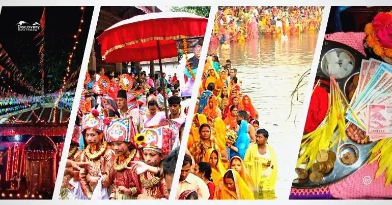

Festivals of Nepal
Home
Contents
Developer
Dashain
Tihar
Holi
Magghi
Buddha Purnima
Teej
Chhath
Shivaratri
Janai Purnima

Credit:Discovery World Trekking
Festivals of Nepal
A Celebration of Culture, Faith, and Unity Nepal, the land of the Himalayas, is not only rich in natural beauty but also in cultural diversity. With over 120 ethnic groups and multiple religions, Nepal is a true melting pot of traditions and beliefs. One of the best reflections of this diversity is seen in its festivals, which are celebrated with enthusiasm, joy, and community spirit throughout the year.
Here are top 10 biggest festivals celebrated in Nepal. ↓
Dashain –
The Biggest Hindu Festival
Dashain, often called the "festival of victory," is the longest and most important festival in Nepal. Celebrated in September or October, it symbolizes the victory of goddess Durga over the demon Mahishasura. Families reunite, elders bless younger members with tika (red vermilion, rice, and yogurt) and jamara (barley sprouts), while people enjoy delicious feasts, new clothes, and swings (ping) set up in villages.
Tihar –
The Festival of Lights
Known as the Nepali version of Diwali, Tihar is a five-day festival celebrated in October or November. Each day is dedicated to honoring animals like crows, dogs, and cows, as well as brothers (Bhai Tika). Houses are decorated with oil lamps, candles, and rangoli, while groups of young people sing Deusi-Bhailo in the streets. It’s one of the most colorful and joyful festivals of Nepal.
Holi –
The Festival of Colors
Holi, celebrated in March, marks the arrival of spring and the victory of good over evil. People throw colored powders and water balloons, dance, and sing in the streets. It’s a day of fun and unity where strangers become friends, and differences disappear under the vibrant colors.
Maghe Sankranti –
Welcoming Longer Days
Maghe Sankranti is a festival celebrated in January to mark the end of the winter solstice. People take holy dips in rivers, worship Lord Vishnu, and eat special foods like sesame seeds, molasses, yam, and ghee. It symbolizes health, prosperity, and the warmth of longer days ahead.
Buddha Jayanti –
The Birth of the Light of Asia
Buddha Jayanti celebrates the birth, enlightenment, and death of Lord Buddha on the same day. On this holy occasion, people visit Buddhist shrines like Lumbini, Boudhanath, and Swayambhunath to light lamps, offer prayers, and spread messages of peace and compassion.
Teej –
The Festival of Women
Teej is a Hindu festival where women dress in red saris, fast, dance, and pray for the well-being of their husbands and families. Celebrated mainly by women, Teej brings together sisters, mothers, and daughters in joyous gatherings, music, and devotion at Pashupatinath and other temples.
Chhath Parva –
Worship of the Sun God
Celebrated mainly in the Terai region, Chhath Parva is dedicated to the Sun God (Surya). Devotees fast, take holy dips, and offer arghya (water and prayers) to the rising and setting sun. It is a festival of purity, devotion, and gratitude for nature’s blessings.
Maha Shivaratri –
Night of Lord Shiva
On this night, thousands of devotees gather at the sacred Pashupatinath Temple in Kathmandu to worship Lord Shiva. Bonfires, bhajans, and rituals fill the night, and sages (sadhus) from India and Nepal gather to celebrate. It’s one of the biggest Hindu festivals in Nepal.
Janai Purnima & Rakshya Bandhan
Protective thread
On this day, Hindu men renew their sacred thread (janai) and all family members tie a protective thread (rakshya sutra) around their wrists. It is also celebrated as Rakshya Bandhan, symbolizing the sacred bond between brothers and sisters.